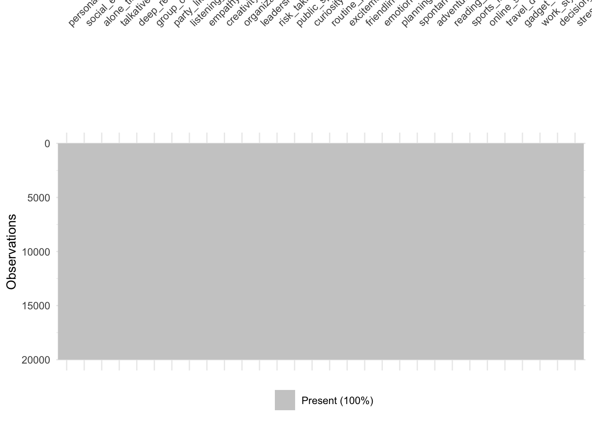
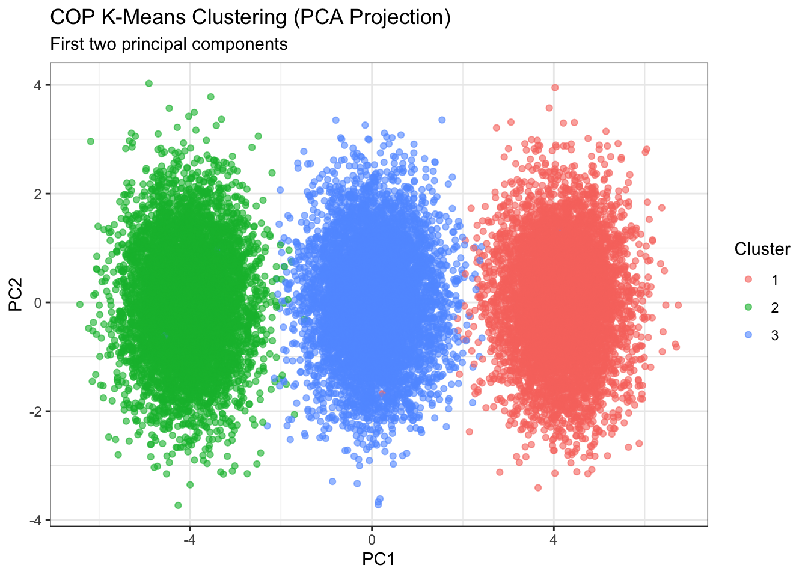
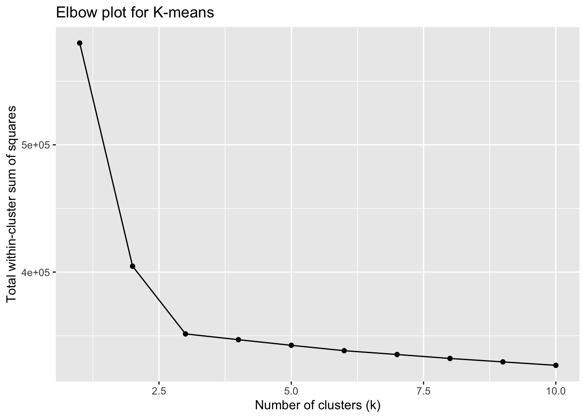

Aarti Garaye, Josephine Kaminaga, Jimmy Wu, and Nicole Xu
Published
December 9, 2025
1 Abstract
Clustering is a fundamental tool in data analysis. It helps uncover latent structure, group similar observations, and identify meaningful patterns in unlabeled data. Because clustering is widely used across domains—from marketing and biology to social sciences and engineering—it is important to understand how different algorithms behave under varying data conditions. This vignette provides a practical, example-driven introduction to four different clustering methods. We deploy DBScan and Kmeans clustering for supervised clustering. For unsupervised we deploy Partitioning Around Medoids (PAM) and Constrained KMeans.
To illustrate these concepts, we use a synthetically generated personality dataset from Kaggle. The raw csv file is stored in the data folder of this repository. The dataset is designed to simulate human personality types — Introvert, Extrovert, and Ambivert — based on various behavioral and psychological traits. It containes 20,000 entries and 30 columns, including 29 numerical features representing personality indicators and 1 categorical (3 class) response variable (personality_type).
The goal of this vignette is to provide a clear, accessible guide for performing and interpreting clustering analyses. By walking through multiple algorithms on the same dataset, readers can compare outcomes, understand strengths and limitations, and gain intuition about when and why certain clustering methods are appropriate. This resource is intended to serve as a practical reference for students and practitioners who encounter clustering tasks in applied data projects.
2 Dataset Structure
The dataset was obtained from Kaggle. It was synthetically generated using Python and NumPy. Feature distributions were modeled with class-specific means and added noise using a normal distribution to simulate natural variation.
All feature values are numerical and scaled from 0 (low) to 10 (high).
Table: Personality Dataset Feature Descriptions
Column Name
Description
personality_type
Target variable: Introvert, Extrovert, or Ambivert
social_energy
Tendency to gain energy from social interaction (0–10)
alone_time_preference
Comfort with solitude
talkativeness
Propensity to engage in conversation
deep_reflection
Frequency of deep or introspective thinking
group_comfort
Ease in group environments
party_liking
Enjoyment of parties and social events
listening_skills
Active listening ability
empathy
Ability to understand others’ emotions
creativity
Tendency toward creative thinking
organization
Preference for order, structure, and plans
leadership
Comfort in leading others
risk_taking
Willingness to take risks
public_speaking_comfort
Comfort level in public speaking situations
curiosity
Interest in learning or exploring
routine_preference
Preference for routine vs. spontaneity
excitement_seeking
Desire for new and stimulating experiences
friendliness
General social warmth and approachability
emotional_stability
Ability to remain calm and balanced under stress
planning
Tendency to plan ahead
spontaneity
Acting on impulse or without planning
adventurousness
Willingness to try new and risky activities
reading_habit
Frequency of reading books or articles
sports_interest
Level of interest in sports or physical activities
online_social_usage
Time spent on social media and online interaction
travel_desire
Interest in travel and exploring new places
gadget_usage
Frequency of gadget or tech device use
work_style_collaborative
Preference for teamwork vs. solo work
decision_speed
How quickly decisions are made
stress_handling
Ability to manage stress effectively
2.1 Disclaimer
This is a synthetic dataset created for research, learning, and experimental purposes only. It does not represent real individuals or real-world psychometrics.
3 Exploratory Analysis
3.1 Loading Libraries and Exploring the Data Struction
The code above loads the necessary libraries and the data from the data folder
personality %>%summarise(across(everything(), ~class(.x)[1])) %>%pivot_longer(everything(), names_to ="column", values_to ="class") %>%kable(col.names =c("Column Name", "Class"), caption ="Variable Type in the Dataset") %>%scroll_box(height ="200px")
Variable Type in the Dataset
Column Name
Class
personality_type
character
social_energy
numeric
alone_time_preference
numeric
talkativeness
numeric
deep_reflection
numeric
group_comfort
numeric
party_liking
numeric
listening_skill
numeric
empathy
numeric
creativity
numeric
organization
numeric
leadership
numeric
risk_taking
numeric
public_speaking_comfort
numeric
curiosity
numeric
routine_preference
numeric
excitement_seeking
numeric
friendliness
numeric
emotional_stability
numeric
planning
numeric
spontaneity
numeric
adventurousness
numeric
reading_habit
numeric
sports_interest
numeric
online_social_usage
numeric
travel_desire
numeric
gadget_usage
numeric
work_style_collaborative
numeric
decision_speed
numeric
stress_handling
numeric
There are 20000 number of rows and 30 columns.
3.2 Missing data
This is synthetically simulated data so we don’t expect any discrepancies. We have already check about the missing values and duplicates in the data cleaning process (in the Scripts folder). We will add a vis miss plot here to double check. Furthermore, it is important to note that \(0\) values are not missing, they are just values with low scoring for that particular variable.
Code
vis_miss(personality)

As the plot shows above, there are no missing values.
3.3 Class Balance
There are three classes in our dataset, introvert, extrovert, and ambivert. Although clustering does not use class labels during model fitting, examining class balance is important when labels are available because imbalance can influence cluster structure, distort evaluation metrics, and make interpretation of the resulting clusters less reliable. The graphs below show the class balance
The figures show that classes are approximately distributed equally. This is good for later analysis.
3.4 Feature Analysis and Variable Importance
We are using four clustering workflows: k-means, PAM, COP-k-means, and DBSCAN. All of these are sensitive to irrelevant or redundant variables. Distance-based methods such as k-means, PAM, and COP-k-means rely on Euclidean distances, so noisy or uninformative features can distort the distance structure and lead to poorly separated or unstable clusters. DBSCAN, while density-based, is also affected by high-dimensional noise because irrelevant variables make it harder to identify dense regions and choose meaningful \(\epsilon\) neighborhoods. By identifying which variables contribute most to cluster separation, we reduce dimensionality, improve cluster stability, and ensure that the resulting supervised and unsupervised clusters reflect meaningful structure rather than artifacts of the feature space.
Recall that all of our predictor variables are numeric and in the summary stats table above we have the means across each variable. We can deploy an ANOVA test to check whether there is any significant difference between the variables. This tells us how much each numeric variable differs between personality groups. In other words the variable that contributes most to the personality type would be the one with highest F-value.
The ANOVA test tells us that the variable that’s going to be most distinguishing will be party liking. Variables that don’t have much sway are creativity, stress-handling, and emotional-stability.
4 Supervised Clustering
Supervised clustering refers to clustering methods that incorporate constraints while forming clusters. These constraints can be also be user provided. It is used when some label information is available and we want the clusters to respect known relationships while still discovering structure in the data. We deploy two commonly used methods for supervised clustering: PAM and Constrainted KMeans with Background Knowledge to the personality dataset.
4.1 Partitioning Around Medoids (PAM)
Partitioning Around Medoids (PAM) is a classic clustering algorithm that forms groups by selecting actual data points, medoids, as the centers of clusters. PAM chooses representative points that minimize the total distance to other points in their cluster. This makes PAM robust to noise, outliers, and non-spherical cluster shapes. Quoting from the cluster package description: “the goal is to find k representative objects which minimize the sum of their dissimilarities of the observations to their closest representative object”, where the ‘representative object’ is a medoid.
The workhorse function for PAM is the pam() function from the cluster package. This function requires an x argument, which is the data matrix or dataframe to perform clustering on, and a k argument which represents the number of clusters that we are looking for. There are a number of other optional arguments which enable flexibility for this function. In the function call below, we are specifying diss = FALSE to ensure that the function does not think x is a dissimilarity matrix, and metric = "euclidean" due to the multidimensional nature of our personality dataset. While some implementations of PAM require that the user manually finds medoids, this implementation conducts the search for a suitable initial set of medoids by itself.
Code
personality <- personality |>mutate(personality_type =as.factor(personality_type) )# pam_clustered <- pam(personality, 3, diss = FALSE,# metric = "euclidean"# )# # saveRDS(pam_clustered, file = "vignette_files/model-results/PAM_model.rds")# Reading in the PAM model from files since the model takes a long time to runpam_clustered <-readRDS("vignette_files/model-results/PAM_model.rds")
The results of the PAM model can be visualized by calling plot() upon the PAM model. Below, we can see that when plot() is called, we obtain a PCA-reminiscent plot of the personality data along two components that together explain 43.92% of the variability in the data. PAM has identified the three distinct clusters that stand out in this representation. We also obtain a numeric description of the clusters’ sizes and numeric widths in the component space.
Code
plot(pam_clustered, main ="PAM Cluster Plot for Personality Data",which =1)
We can obtain further results by inspecting the fitted elements of the PAM model directly. As seen below, the PAM model returns information about the medoids, their locations, the clusters and their sizes, and some other miscellaneous attributes of the data.
The most important information from the PAM model can be found by accessing the medoids, clusinfo, and silinfo attributes. The medoids attribute contains the values of each medoid along each variable in the data, as seen below.
Code
htmltools::div(style ="height:270px; overflow-y: scroll; border:1px solid #ccc; padding:5px;",htmltools::HTML(knitr::kable(pam_clustered$medoids, format ="html", caption ="The mean of each variable across the three clusters")))
The mean of each variable across the three clusters
personality_type
social_energy
alone_time_preference
talkativeness
deep_reflection
group_comfort
party_liking
listening_skill
empathy
creativity
organization
leadership
risk_taking
public_speaking_comfort
curiosity
routine_preference
excitement_seeking
friendliness
emotional_stability
planning
spontaneity
adventurousness
reading_habit
sports_interest
online_social_usage
travel_desire
gadget_usage
work_style_collaborative
decision_speed
stress_handling
2
7.406811
2.235440
9.172372
3.586678
8.306333
7.659353
5.861117
5.148295
5.595678
4.315666
7.531658
7.437853
7.520732
6.050193
3.539609
7.586667
8.451355
6.036026
4.976859
7.643141
8.090848
5.917936
4.516458
8.984372
7.646414
6.560956
8.552186
6.468760
7.047821
1
3.494743
5.745152
4.652769
5.495603
5.978168
4.755904
7.818847
5.663815
5.527899
5.926737
6.248520
4.459779
4.925115
6.853544
6.161454
5.350742
7.716442
5.550136
5.919260
5.620713
5.225287
6.056601
5.566365
6.376277
6.345300
3.622792
5.263834
4.452687
4.720935
3
3.259337
7.464871
2.523655
6.616111
3.141268
1.895573
9.173012
8.737643
5.431702
7.840322
3.756620
2.292241
4.042761
6.139455
7.827334
2.089178
5.868511
5.552662
7.301337
2.091976
2.811703
7.884244
3.726055
6.308437
2.827615
4.359291
4.881269
2.908636
5.666559
The clusinfo attribute contains information about the size and dissimilarities of each identified cluster, while the silinfo attribute describes the silhouette of the PAM model (a measurement of cluster consistency) and contains multiple smaller attributes - widths has information about the designated cluster and silhouette width of each individual data point, clus.avg.widths has the average silhouette width of each identified cluster, and avg.width is the average width across all clusters. Since widths is quite the long attribute, we will skip that and show clus.avg.widths instead.
We can also compare the cluster assignments of PAM with the true group labels of the data. The cluster assignments of PAM are found in the clustering attribute.
As seen in the table above, the clustering results of PAM are extremely accurate. Ambivert seems like the hardest group to cluster correctly, which makes sense due to its position as a median group between extrovert and introvert.
4.2 Constrained KMeans with Background Knowledge (COP KMeans)
Constrained K-Means (COP K-Means) extends the traditional K-means algorithm by incorporating background knowledge in the form of pairwise constraints. Unlike PAM, COP K-means requires the user to provide constraint sets. For the personality dataset with the outcome varaible as the personality_type we can construct constraints that mimic a realistic “semi-supervised” setting:
Must-link: A few pairs of people with the same personality_type - these shouldn’t be separated by the clustering algorithm
Cannot-Link: A few pairs of people with different personality_type - these shouldn’t be placed in the same cluster
This uses the ground truth only to form constraints, not as a variable in the clustering.
COP K-means can be implemented with conclust. (Note: this package was removed from CRAN, and we are using a downloaded & archived version of the ckmeans() function that is used to perform COP K-means clustering).
Code
set.seed(11302025)# keep only numeric featurespersonality_num <-as.matrix(personality[ , -1])
We sample a handful of pairs to create small but meaningful constraint sets. These constraints are only for demonstration — in applied work, constraints come from domain experts.
After identifying the must-link pairs and the can’t link pairs we fit the COP KMeans and obtain that Cluster 1: 6559 introverts, 14 ambiverts and 0 extroverts is clearly the introvert cluster. Cluster 2 is the Extrovert cluster and Cluster 3 is the Ambivert cluster. This is near-perfect recovery of personality type. COP-KMeans used only 6 constraints total: 3 must-link and 3 cannot-link. And still:
Extroverts is 99.7% correctly clustered Introverts is 100% correctly clustered Ambiverts is 99% correctly clustered
We can further visualize this with these plots. Here we are using PC1 and PC2 which are the principle components explaining most of the variability. Note, We are only using PCA for visualization, because this dataset is operating in 30+ dimensional space where plots are impossible to interpret directly. In fact, we did the same with PAM, when we call pam() it automatically produces a PCA projection internally.
Code
# PCA for plottingpca <-prcomp(personality_num, scale. =TRUE)pca_df <-as.data.frame(pca$x[,1:2]) |>mutate(cluster =factor(ck_clusters))ggplot(pca_df, aes(PC1, PC2, color = cluster)) +geom_point(alpha =0.6) +labs(title ="COP K-Means Clustering (PCA Projection)",subtitle ="First two principal components",color ="Cluster" ) +theme_bw()

For centers of each of the cluster means we can find each means and see how these are different across clusters. In both PAM and COP-KMeans, the cluster center (a medoid for PAM and a mean vector for K-Means) represents the “typical” or most representative profile of individuals in that cluster. Examining these centers allows us to interpret what distinguishes one cluster from another. By comparing centers across clusters, we can characterize the personality patterns each cluster captures and evaluate whether they align with known categories such as introverts, ambiverts, and extroverts.
Code
cluster_centers <-aggregate(personality_num,by =list(cluster = ck_clusters),FUN = mean)htmltools::div(style ="height:250px; overflow-y: scroll; border:1px solid #ccc; padding:5px;",htmltools::HTML(knitr::kable(cluster_centers, format ="html", caption ="The mean of each variable across the three clusters")))
The mean of each variable across the three clusters
cluster
social_energy
alone_time_preference
talkativeness
deep_reflection
group_comfort
party_liking
listening_skill
empathy
creativity
organization
leadership
risk_taking
public_speaking_comfort
curiosity
routine_preference
excitement_seeking
friendliness
emotional_stability
planning
spontaneity
adventurousness
reading_habit
sports_interest
online_social_usage
travel_desire
gadget_usage
work_style_collaborative
decision_speed
stress_handling
1
3.035966
7.960657
3.017551
7.916957
3.999220
2.049341
7.934069
6.974338
5.994112
6.981851
4.013274
3.012814
3.009615
6.013120
6.970762
3.016264
5.970622
6.039957
6.998589
4.004509
3.014832
7.926978
3.960899
5.022474
4.002698
4.998792
5.026432
3.969896
5.991588
2
7.902112
3.007742
7.949479
4.031895
7.958821
7.961522
5.998676
6.005753
6.002411
4.993271
7.941271
6.941940
7.923933
6.973490
3.980442
7.942069
7.925974
6.018240
5.022732
6.957832
6.978804
3.981803
6.983112
7.931738
6.977356
6.987139
7.932132
7.004334
5.965160
3
5.485354
5.502176
5.505369
6.011091
6.000488
4.982166
7.002657
6.490349
5.991249
5.987369
6.023281
4.997074
5.498346
6.504377
5.472067
5.522507
6.989204
5.989144
6.001130
5.459836
5.022872
5.998886
5.468581
6.479136
5.482837
5.992085
6.485153
5.509516
5.989937
Finally, we can cross check this with the truth. We can only do this because we are practicing Supervised Learning.
As we can see from the table above, the COP KMeans clustering is very close to the ground truth. Ambivert seems like the hardest group to cluster correctly, which makes sense due to its position as a median group between extrovert and introvert.
5 Unsupervised Learning
5.1 DBScan
In this section we will walk through an implementation of DBSCAN, a density based clustering algorithm that groups data points based on how close they are in the feature space. This algorithm differs from other clustering algorithms such as k-means and hierarchical in that it works well with arbitrarily shaped clusters, as well as dealing with outliers and noise. This implementation will be using the dbscan R package.
In order to cluster the data, we remove the predictor column since we are using an unsupervised learning method.
The two parameters needed for dbscan are epsilon and minimum points. Epsilon is the radius of a cluster around a data point, where if the distance between two points is less than or equal to epsilon, they are considered neighbors. Minimum points is defined as the number of points needed within the epsilon radius to be considered a dense region.
DBSCAN works by categorizing data points into core points (sufficient number of neighbors and within epsilon radius), border points (insufficient number of neighbors but within epsilon radius), and noise points (not belonging to any cluster). It does not require a k number of clusters to be specified in advance and instead iteratively expands clusters from core points by finding density based neighbors.
We first visualize a knee plot to determine the most optimal epsilon value for DBSCAN clustering. According to Schubert, E., Sander, J., Ester, M., Kriegel, H. P., & Xu, X. (2017). DBSCAN revisited, revisited: why and how you should (still) use DBSCAN. ACM Transactions on Database Systems (TODS), 42(3), 19, for two-dimensional data use a default value of minPts=4. For more than 2 dimensions, define minPts=2*dim. Once you know which minPts to choose, you can determine epsilon by plotting the k-distances with k=minPts. Find the ‘knee’ in the graph and that corresponding k-distance value is your epsilon value.
Code
#setting the value of minimum points and choosing k from the knee plotset.seed(1)min_pts =2*dim(personality_cluster)[2]kNNdistplot(personality_cluster, k = min_pts)

In the above plot, we see that the ‘knee’ occurs around 7 so we set our epsilon value to 7 and run dbscan.
DBSCAN clustering for 20000 objects.
Parameters: eps = 7, minPts = 58
Using euclidean distances and borderpoints = TRUE
The clustering contains 3 cluster(s) and 12081 noise points.
0 1 2 3
12081 3171 2023 2725
Available fields: cluster, eps, minPts, metric, borderPoints
We see that it has returned clusters 0, 1, 2, 3. In DBSCAN, a value of 0 means that the algorithm decided that point did not fall into any cluster, aka a noise point. Of the 20000 data points, 12081 were classified as noise points, while the rest fell into one of the three clusters. Overall, the size of clusters appear fairly balanced, however the success rate of assigning every point to a cluster is quite low.
We remove the noise points and visualize our clusters using the factoextra package. This package automatically performs PCA to reduce the dimensionality, and plots the first two principal components.
The visualization shows 3 strong clusters with some overlap, which follows general intuition about personality types. We see also that PC1 captures 47.9% of the variation between data points.
Code
pers_summary_transpose <- pers_combined %>%group_by(cluster) %>%summarise(across(where(is.numeric), mean, .names ="mean_{.col}"), .groups ="drop") %>%t()colnames(pers_summary_transpose) <- pers_summary_transpose[1,]pers_summary_transpose <- pers_summary_transpose[-1,]pers_table <- pers_summary_transpose %>%kbl() %>%kable_material("striped")htmltools::div(style ="height:250px; overflow-y: scroll; border:1px solid #ccc; padding:5px;",htmltools::HTML(pers_table, format ="html", caption ="The mean of each variable across the three clusters"))
1
2
3
mean_social_energy
8.015755
5.485321
2.981383
mean_alone_time_preference
3.019415
5.554513
8.048022
mean_talkativeness
8.052673
5.463258
2.949925
mean_deep_reflection
4.055678
6.034906
8.033244
mean_group_comfort
8.062492
5.967595
3.981722
mean_party_liking
8.000377
5.027602
1.959710
mean_listening_skill
6.042676
6.991429
7.986047
mean_empathy
5.963339
6.493232
7.079974
mean_creativity
5.989734
5.994880
5.986688
mean_organization
4.981949
6.039266
7.053352
mean_leadership
8.055425
6.109254
4.004884
mean_risk_taking
6.948924
4.915393
3.026483
mean_public_speaking_comfort
8.016415
5.446211
2.945883
mean_curiosity
6.988948
6.537941
5.947961
mean_routine_preference
3.974180
5.515977
7.024955
mean_excitement_seeking
7.996808
5.453792
3.016162
mean_friendliness
7.978318
7.006354
5.923666
mean_emotional_stability
6.007383
6.014936
6.048586
mean_planning
5.009380
6.046702
7.001852
mean_spontaneity
7.018122
5.386736
4.009440
mean_adventurousness
7.018868
4.999668
3.034066
mean_reading_habit
3.983393
5.946954
8.014092
mean_sports_interest
6.935575
5.556506
3.948279
mean_online_social_usage
8.009110
6.498931
5.063991
mean_travel_desire
7.030731
5.509973
4.017684
mean_gadget_usage
7.045289
5.998087
5.028247
mean_work_style_collaborative
8.034051
6.502705
5.028624
mean_decision_speed
7.051157
5.571648
4.016869
mean_stress_handling
5.946669
5.956471
5.956032
html The mean of each variable across the three clusters
Taking a look at the average traits across the three clusters, we start to notice some patterns that match our prior assumptions about the true labels present in the data. Namely, cluster 1 has high values for traits such as social energy, talkativeness, party liking, leadership, spontaneity etc. Meanwhile cluster 3 has high values for traits such as listening skill, routine preference,organization, empathy, deep reflection etc. We see also that cluster 2 usually has values in the middle for most of the traits. These patterns follow our intuition for what traits each personality might have, and suggests that DBSCAN successfully identified the introvert, extrovert, and ambivert categories.
5.2 KMeans
In this part of the project, we apply unsupervised K-means clustering to the Personality Synthetic Dataset to investigate whether natural groupings of personality traits emerge without using any labels. Our goals are:
Identify how many personality clusters exist using common model-selection diagnostics (elbow plot and silhouette analysis).
Interpret the discovered clusters by summarizing their personality trait profiles.
Visualize the structure of these clusters using PCA to examine their separability.
Assess whether the clusters are meaningful, stable, and interpretable in a psychological sense.
Namely, this part of the project answer the following questions: What natural personality clusters exist in the dataset, and what do they represent? Are they meaningful? How stable are they?
Code
# Keep only numeric columns of data and remove missing numeric valuesdat_num <- personality %>%select(where(is.numeric)) %>%drop_na()dat_scaled <-scale(dat_num)
Code
# Choose the value of k using elbow methodset.seed(20251126)max_k <-10wss_df <-tibble(k =1:max_k,tot_withinss =map_dbl(k, ~kmeans(dat_scaled, centers = .x, nstart =20)$tot.withinss))# Elbow plotggplot(wss_df, aes(x = k, y = tot_withinss)) +geom_line() +geom_point() +labs(title ="Elbow plot for K-means",x ="Number of clusters (k)",y ="Total within-cluster sum of squares")
The elbow plot shows the total within-cluster sum of squares decreasing sharply from k = 1 to k = 2, with diminishing improvements for k \(\geq\) 3. This indicates that going beyond two clusters adds little additional explanatory power.
Code
# Choose the value of k using average silhouette width methodset.seed(20251126)sil_df <-tibble(k =2:max_k,sil_width =map_dbl(k, ~{ km <-kmeans(dat_scaled, centers = .x, nstart =20) ss <-silhouette(km$cluster, dist(dat_scaled))mean(ss[, "sil_width"]) }))# This shows the ideal number of groups is 2ggplot(sil_df, aes(x = k, y = sil_width)) +geom_line() +geom_point() +labs(title ="Average silhouette width by k",x ="Number of clusters (k)",y ="Average silhouette width")
The silhouette analysis shows the highest average silhouette width at k = 2, with values decreasing steadily at higher k.
Based on the results from both methods, k = 2 is the optimal number of groups, both statistically and structurally. Therefore, we will specify k = 2 for the K-means model fit.
Code
# Fitting the unsupervised k-means model with k = 2set.seed(20251127)k_best <-2km_final <-kmeans(dat_scaled, centers = k_best, nstart =50)# Adding assigned clusters to data for plotting resultsdat_clusters <- dat_num %>%filter(complete.cases(dat_num)) %>%mutate(cluster =factor(km_final$cluster))# Cluster sizescluster_sizes <- dat_clusters %>%count(cluster, name ="n")kable(cluster_sizes)
cluster
n
1
8161
2
11839
Code
# Summarise cluster results, revealing two large clustering typescluster_summary <- dat_clusters %>%group_by(cluster) %>%summarise(across(where(is.numeric), mean, .names ="mean_{.col}"),.groups ="drop")print(cluster_summary)
K-means produced two large and stable clusters consisting of 8,161 individuals and 11,839 individuals correspondingly, giving us confidence that the personality dataset contains two major profiles. This distribution is not perfectly balanced, but both clusters remain large and well-represented.
The cluster summary table reveals two clear personality types. Cluster 1, on the one hand, is featured with high social energy, talkativeness, party liking, friendliness, and excitement seeking, with low alone-time preference and routine preference. With these features observed, we conclude that this cluster resembles extroverted personality.
Cluster 2, on the other hand, is featured with high alone-time preference, deep reflection, and routine preference, with lower scores on social and energetic traits. With these characteristics displayed, we conclude that this cluster resembles introverted personality.
The dataset naturally splits into two psychologically meaningful clusters, corresponding roughly to extroversion vs. introversion. This suggests that K-means has captured real structure that aligns with expectation from general knowledge.
Code
# Use PCA to visualize results of clustering along two principal dimensionspca <-prcomp(dat_scaled, center =TRUE, scale. =TRUE)pca_df <-as_tibble(pca$x[, 1:2]) %>%rename(PC1 =1, PC2 =2) %>%mutate(cluster = dat_clusters$cluster)ggplot(pca_df, aes(x = PC1, y = PC2, colour = cluster)) +geom_point(alpha =0.6) +labs(title ="K-means clusters visualised in first two PCs") +theme_minimal()
The PCA plot shows that Cluster 1 and Cluster 2 occupy different regions along the first principal component (PC1), which shows a meaningful separation between the groups. The strongest variation occurs along PC1, which appears to represent an extroversion–introversion dimension. This supports the K-means solution with two dominant clusters. Interestingly, the projection reveals a subtle tri-modal pattern along PC1, suggesting that additional substructure may exist within the dataset. However, the two-cluster solution still captures the most significant division in personality traits.
Overall, K-means clustering reveals that the Personality Synthetic Dataset contains two dominant personality groups. Model-selection diagnostics, trait summaries, and PCA visualization all support this two-cluster structure. These groups correspond closely to introversion and extroversion, one of the most widely studied axes in personality psychology.
6 Conclusion
7 References
Source Code
---title: "Vignette: Guide to Supervised and Unsupervised Clustering"format: html: code-fold: true code-tools: true number-sections: truecss: bootstrap.cssauthors: Aarti Garaye, Josephine Kaminaga, Jimmy Wu, and Nicole Xudate: "`r Sys.Date()`"---```{r setup, include=FALSE}knitr::opts_chunk$set(echo =TRUE)```# AbstractClustering is a fundamental tool in data analysis. It helps uncover latent structure, group similar observations, and identify meaningful patterns in unlabeled data. Because clustering is widely used across domains—from marketing and biology to social sciences and engineering—it is important to understand how different algorithms behave under varying data conditions. This vignette provides a practical, example-driven introduction to four different clustering methods. We deploy DBScan and Kmeans clustering for supervised clustering. For unsupervised we deploy Partitioning Around Medoids (PAM) and Constrained KMeans.To illustrate these concepts, we use a synthetically generated [personality dataset from Kaggle](https://www.kaggle.com/datasets/miadul/introvert-extrovert-and-ambivert-classification/data). The raw csv file is stored in the data folder of this repository. The dataset is designed to simulate human personality types — Introvert, Extrovert, and Ambivert — based on various behavioral and psychological traits. It containes 20,000 entries and 30 columns, including 29 numerical features representing personality indicators and 1 categorical (3 class) response variable (`personality_type`). The goal of this vignette is to provide a clear, accessible guide for performing and interpreting clustering analyses. By walking through multiple algorithms on the same dataset, readers can compare outcomes, understand strengths and limitations, and gain intuition about when and why certain clustering methods are appropriate. This resource is intended to serve as a practical reference for students and practitioners who encounter clustering tasks in applied data projects.# Dataset StructureThe dataset was obtained from Kaggle. It was synthetically generated using Python and NumPy. Feature distributions were modeled with class-specific means and added noise using a normal distribution to simulate natural variation.**All feature values are numerical and scaled from 0 (low) to 10 (high).** Table: Personality Dataset Feature Descriptions::: {.panel-body style="max-height:250px; overflow-y:auto;"}| Column Name | Description ||---------------------------|-------------------------------------------------------||`personality_type`| Target variable: Introvert, Extrovert, or Ambivert ||`social_energy`| Tendency to gain energy from social interaction (0–10) ||`alone_time_preference`| Comfort with solitude ||`talkativeness`| Propensity to engage in conversation ||`deep_reflection`| Frequency of deep or introspective thinking ||`group_comfort`| Ease in group environments ||`party_liking`| Enjoyment of parties and social events ||`listening_skills`| Active listening ability ||`empathy`| Ability to understand others’ emotions ||`creativity`| Tendency toward creative thinking ||`organization`| Preference for order, structure, and plans ||`leadership`| Comfort in leading others ||`risk_taking`| Willingness to take risks ||`public_speaking_comfort`| Comfort level in public speaking situations ||`curiosity`| Interest in learning or exploring ||`routine_preference`| Preference for routine vs. spontaneity ||`excitement_seeking`| Desire for new and stimulating experiences ||`friendliness`| General social warmth and approachability ||`emotional_stability`| Ability to remain calm and balanced under stress ||`planning`| Tendency to plan ahead ||`spontaneity`| Acting on impulse or without planning ||`adventurousness`| Willingness to try new and risky activities ||`reading_habit`| Frequency of reading books or articles ||`sports_interest`| Level of interest in sports or physical activities ||`online_social_usage`| Time spent on social media and online interaction ||`travel_desire`| Interest in travel and exploring new places ||`gadget_usage`| Frequency of gadget or tech device use ||`work_style_collaborative`| Preference for teamwork vs. solo work ||`decision_speed`| How quickly decisions are made ||`stress_handling`| Ability to manage stress effectively |:::## Disclaimer**This is a synthetic dataset created for research, learning, and experimental purposes only. It does not represent real individuals or real-world psychometrics.**# Exploratory Analysis## Loading Libraries and Exploring the Data StructionThe code above loads the necessary libraries and the data from the data folder```{r loading_libs, warning=FALSE, message=FALSE}library(readr)library(readxl)library(visdat)library(dplyr)library(caret)library(ggplot2)library(knitr)library(kableExtra)library(tidyr)library(tidyverse)library(cluster)library(broom)library(purrr)library(dbscan)library(factoextra)personality <-read.csv("data/raw/personality_synthetic_dataset.csv")source("Scripts/ckmeans.R")```The table shows each variable class.```{r}personality %>%summarise(across(everything(), ~class(.x)[1])) %>%pivot_longer(everything(), names_to ="column", values_to ="class") %>%kable(col.names =c("Column Name", "Class"), caption ="Variable Type in the Dataset") %>%scroll_box(height ="200px")```There are `r nrow(personality)` number of rows and `r ncol(personality)` columns.## Missing dataThis is synthetically simulated data so we don't expect any discrepancies. We have already check about the missing values and duplicates in the data cleaning process (in the Scripts folder). We will add a vis miss plot here to double check. Furthermore, it is important to note that $0$ values are not missing, they are just values with low scoring for that particular variable. ```{r missing_data, fig.align='center', fig.cap="As the plot shows above, there are no missing values."}vis_miss(personality)```## Class BalanceThere are three classes in our dataset, introvert, extrovert, and ambivert. Although clustering does not use class labels during model fitting, examining class balance is important when labels are available because imbalance can influence cluster structure, distort evaluation metrics, and make interpretation of the resulting clusters less reliable. The graphs below show the class balance```{r class_balance, fig.cap="The figures show that classes are approximately distributed equally. This is good for later analysis."}personality_counts <- personality %>%count(personality_type)pie( personality_counts$n,labels =paste0(personality_counts$personality_type, " (", round(personality_counts$n /sum(personality_counts$n) *100, 1), "%)"),main ="Personality Type Distribution")```## Feature Analysis and Variable ImportanceWe are using four clustering workflows: k-means, PAM, COP-k-means, and DBSCAN. All of these are sensitive to irrelevant or redundant variables. Distance-based methods such as k-means, PAM, and COP-k-means rely on Euclidean distances, so noisy or uninformative features can distort the distance structure and lead to poorly separated or unstable clusters. DBSCAN, while density-based, is also affected by high-dimensional noise because irrelevant variables make it harder to identify dense regions and choose meaningful $\epsilon$ neighborhoods. By identifying which variables contribute most to cluster separation, we reduce dimensionality, improve cluster stability, and ensure that the resulting supervised and unsupervised clusters reflect meaningful structure rather than artifacts of the feature space. Recall that all of our predictor variables are numeric and in the summary stats table above we have the means across each variable. We can deploy an ANOVA test to check whether there is any significant difference between the variables. This tells us how much each numeric variable differs between personality groups. In other words the variable that contributes most to the personality type would be the one with highest F-value. ```{r variable_importance, message=FALSE, warning=FALSE}# Exclude personality_type (response)numeric_vars <- personality %>%select(where(is.numeric))# Compute ANOVA F-statistics for each variableanova_results <-map_df(names(numeric_vars), function(var) { model <-aov(personality[[var]] ~ personality$personality_type)tidy(model) %>%filter(term !="Residuals") %>%mutate(variable = var) %>%select(variable, statistic, p.value)})# Plot variable importanceanova_results %>%arrange(desc(statistic)) %>%ggplot(aes(x =reorder(variable, statistic), y = statistic)) +geom_col(fill ="mistyrose1", color ="black") +coord_flip() +labs(title ="Variable Importance (ANOVA F-statistic)",x ="Variable",y ="F-Statistic") +theme_bw()```The ANOVA test tells us that the variable that's going to be most distinguishing will be party liking. Variables that don't have much sway are creativity, stress-handling, and emotional-stability. # Supervised ClusteringSupervised clustering refers to clustering methods that incorporate constraints while forming clusters. These constraints can be also be user provided. It is used when some label information is available and we want the clusters to respect known relationships while still discovering structure in the data. We deploy two commonly used methods for supervised clustering: PAM and Constrainted KMeans with Background Knowledge to the personality dataset. ## Partitioning Around Medoids (PAM)Partitioning Around Medoids (PAM) is a classic clustering algorithm that forms groups by selecting actual data points, **medoids**, as the centers of clusters. PAM chooses representative points that minimize the total distance to other points in their cluster. This makes PAM robust to noise, outliers, and non-spherical cluster shapes. Quoting from the `cluster` package description: "the goal is to find *k* representative objects which minimize the sum of their dissimilarities of the observations to their closest representative object", where the 'representative object' is a medoid. The workhorse function for PAM is the `pam()` function from the `cluster` package. This function requires an `x` argument, which is the data matrix or dataframe to perform clustering on, and a `k` argument which represents the number of clusters that we are looking for. There are a number of other optional arguments which enable flexibility for this function. In the function call below, we are specifying `diss = FALSE` to ensure that the function does not think `x` is a dissimilarity matrix, and `metric = "euclidean"` due to the multidimensional nature of our personality dataset. While some implementations of PAM require that the user manually finds medoids, this implementation conducts the search for a suitable initial set of medoids by itself.```{r fit-pam}personality <- personality |>mutate(personality_type =as.factor(personality_type) )# pam_clustered <- pam(personality, 3, diss = FALSE,# metric = "euclidean"# )# # saveRDS(pam_clustered, file = "vignette_files/model-results/PAM_model.rds")# Reading in the PAM model from files since the model takes a long time to runpam_clustered <-readRDS("vignette_files/model-results/PAM_model.rds")```The results of the PAM model can be visualized by calling `plot()` upon the PAM model. Below, we can see that when `plot()` is called, we obtain a PCA-reminiscent plot of the personality data along two components that together explain 43.92% of the variability in the data. PAM has identified the three distinct clusters that stand out in this representation. We also obtain a numeric description of the clusters' sizes and numeric widths in the component space.```{r plot-pam-results}plot(pam_clustered, main ="PAM Cluster Plot for Personality Data",which =1)```We can obtain further results by inspecting the fitted elements of the PAM model directly. As seen below, the PAM model returns information about the medoids, their locations, the clusters and their sizes, and some other miscellaneous attributes of the data.```{r inspect-pam-results}names(pam_clustered)```The most important information from the PAM model can be found by accessing the `medoids`, `clusinfo`, and `silinfo` attributes. The `medoids` attribute contains the values of each medoid along each variable in the data, as seen below.```{r medoids}htmltools::div(style ="height:270px; overflow-y: scroll; border:1px solid #ccc; padding:5px;",htmltools::HTML(knitr::kable(pam_clustered$medoids, format ="html", caption ="The mean of each variable across the three clusters")))```The `clusinfo` attribute contains information about the size and dissimilarities of each identified cluster, while the `silinfo` attribute describes the silhouette of the PAM model (a measurement of cluster consistency) and contains multiple smaller attributes - `widths` has information about the designated cluster and silhouette width of each individual data point, `clus.avg.widths` has the average silhouette width of each identified cluster, and `avg.width` is the average width across all clusters. Since `widths` is quite the long attribute, we will skip that and show `clus.avg.widths` instead.```{r pam_info}pam_clustered$clusinfonames(pam_clustered$silinfo)pam_clustered$silinfo$clus.avg.widths```We can also compare the cluster assignments of PAM with the true group labels of the data. The cluster assignments of PAM are found in the `clustering` attribute.```{r pam_table}table(pam_clustered$clustering, personality$personality_type)```As seen in the table above, the clustering results of PAM are extremely accurate. Ambivert seems like the hardest group to cluster correctly, which makes sense due to its position as a median group between extrovert and introvert.## Constrained KMeans with Background Knowledge (COP KMeans)Constrained K-Means (COP K-Means) extends the traditional K-means algorithm by incorporating background knowledge in the form of pairwise constraints. Unlike PAM, COP K-means requires the user to provide constraint sets. For the personality dataset with the outcome varaible as the `personality_type` we can construct constraints that mimic a realistic "semi-supervised" setting: - Must-link: A few pairs of people with the same personality_type - these shouldn’t be separated by the clustering algorithm- Cannot-Link: A few pairs of people with different personality_type - these shouldn’t be placed in the same clusterThis uses the ground truth only to form constraints, not as a variable in the clustering.**COP K-means can be implemented with `conclust`. (Note: this package was removed from CRAN, and we are using a downloaded & archived version of the `ckmeans()` function that is used to perform COP K-means clustering).**```{r personality_num}set.seed(11302025)# keep only numeric featurespersonality_num <-as.matrix(personality[ , -1])```We sample a handful of pairs to create small but meaningful constraint sets. These constraints are only for demonstration — in applied work, constraints come from domain experts. ```{r fitting_cpkmeans}ext <-which(personality$personality_type =="Extrovert")int <-which(personality$personality_type =="Introvert")amb <-which(personality$personality_type =="Ambivert")must_link_pairs <-rbind(sample(ext, 2),sample(int, 2),sample(amb, 2))#must_link_pairscant_link_pairs <-rbind(c(sample(ext, 1), sample(int, 1)),c(sample(int, 1), sample(amb, 1)),c(sample(ext, 1), sample(amb, 1)))#cant_link_pairsck_clusters <-ckmeans(data = personality_num,k =3,mustLink = must_link_pairs,cantLink = cant_link_pairs,maxIter =50)table(ck_clusters, personality$personality_type)```After identifying the must-link pairs and the can't link pairs we fit the COP KMeans and obtain that Cluster 1: 6559 introverts, 14 ambiverts and 0 extroverts is clearly the introvert cluster. Cluster 2 is the Extrovert cluster and Cluster 3 is the Ambivert cluster. This is near-perfect recovery of personality type. COP-KMeans used only 6 constraints total: 3 must-link and 3 cannot-link. And still:Extroverts is 99.7% correctly clusteredIntroverts is 100% correctly clusteredAmbiverts is 99% correctly clusteredWe can further visualize this with these plots. Here we are using PC1 and PC2 which are the principle components explaining most of the variability. Note, We are only using PCA for visualization, because this dataset is operating in 30+ dimensional space where plots are impossible to interpret directly. In fact, we did the same with PAM, when we call `pam()` it automatically produces a PCA projection internally.```{r copkmeans_plots}# PCA for plottingpca <-prcomp(personality_num, scale. =TRUE)pca_df <-as.data.frame(pca$x[,1:2]) |>mutate(cluster =factor(ck_clusters))ggplot(pca_df, aes(PC1, PC2, color = cluster)) +geom_point(alpha =0.6) +labs(title ="COP K-Means Clustering (PCA Projection)",subtitle ="First two principal components",color ="Cluster" ) +theme_bw()```For centers of each of the cluster means we can find each means and see how these are different across clusters. In both PAM and COP-KMeans, the cluster center (a medoid for PAM and a mean vector for K-Means) represents the “typical” or most representative profile of individuals in that cluster. Examining these centers allows us to interpret what distinguishes one cluster from another. By comparing centers across clusters, we can characterize the personality patterns each cluster captures and evaluate whether they align with known categories such as introverts, ambiverts, and extroverts. ```{r copkmeans_table}cluster_centers <-aggregate(personality_num,by =list(cluster = ck_clusters),FUN = mean)htmltools::div(style ="height:250px; overflow-y: scroll; border:1px solid #ccc; padding:5px;",htmltools::HTML(knitr::kable(cluster_centers, format ="html", caption ="The mean of each variable across the three clusters")))```Finally, we can cross check this with the truth. We can only do this because we are practicing Supervised Learning.```{r truth-cpkmeans}table(ck_clusters, personality$personality_type)```As we can see from the table above, the COP KMeans clustering is very close to the ground truth. Ambivert seems like the hardest group to cluster correctly, which makes sense due to its position as a median group between extrovert and introvert. # Unsupervised Learning## DBScanIn this section we will walk through an implementation of DBSCAN, a density based clustering algorithm that groups data points based on how close they are in the feature space. This algorithm differs from other clustering algorithms such as k-means and hierarchical in that it works well with arbitrarily shaped clusters, as well as dealing with outliers and noise. This implementation will be using the `dbscan` R package.In order to cluster the data, we remove the predictor column since we are using an unsupervised learning method.```{r}personality_cluster <- personality %>%select(-personality_type)```The two parameters needed for dbscan are epsilon and minimum points. Epsilon is the radius of a cluster around a data point, where if the distance between two points is less than or equal to epsilon, they are considered neighbors. Minimum points is defined as the number of points needed within the epsilon radius to be considered a dense region.DBSCAN works by categorizing data points into core points (sufficient number of neighbors and within epsilon radius), border points (insufficient number of neighbors but within epsilon radius), and noise points (not belonging to any cluster). It does not require a k number of clusters to be specified in advance and instead iteratively expands clusters from core points by finding density based neighbors.We first visualize a knee plot to determine the most optimal epsilon value for DBSCAN clustering. According to _Schubert, E., Sander, J., Ester, M., Kriegel, H. P., & Xu, X. (2017). DBSCAN revisited, revisited: why and how you should (still) use DBSCAN. ACM Transactions on Database Systems (TODS), 42(3), 19_, for two-dimensional data use a default value of minPts=4. For more than 2 dimensions, define minPts=2*dim. Once you know which minPts to choose, you can determine epsilon by plotting the k-distances with k=minPts. Find the 'knee' in the graph and that corresponding k-distance value is your epsilon value.```{r}#setting the value of minimum points and choosing k from the knee plotset.seed(1)min_pts =2*dim(personality_cluster)[2]kNNdistplot(personality_cluster, k = min_pts)```In the above plot, we see that the 'knee' occurs around 7 so we set our epsilon value to 7 and run `dbscan`.```{r}set.seed(1)pers_dbscan <-dbscan(personality_cluster, eps =7, minPts = min_pts)pers_dbscan```We see that it has returned clusters 0, 1, 2, 3. In DBSCAN, a value of 0 means that the algorithm decided that point did not fall into any cluster, aka a noise point. Of the 20000 data points, 12081 were classified as noise points, while the rest fell into one of the three clusters. Overall, the size of clusters appear fairly balanced, however the success rate of assigning every point to a cluster is quite low.We remove the noise points and visualize our clusters using the `factoextra` package. This package automatically performs PCA to reduce the dimensionality, and plots the first two principal components.```{r}pers_combined <- personality %>%mutate(cluster = pers_dbscan$cluster) %>%filter(cluster !=0)fviz_cluster(list(clusters = pers_combined[,31], data = pers_combined[,2:30]), geom ="point", ellipse =TRUE, main ="DBScan Clustering w/o noise values")```The visualization shows 3 strong clusters with some overlap, which follows general intuition about personality types. We see also that PC1 captures 47.9% of the variation between data points.```{r}pers_summary_transpose <- pers_combined %>%group_by(cluster) %>%summarise(across(where(is.numeric), mean, .names ="mean_{.col}"), .groups ="drop") %>%t()colnames(pers_summary_transpose) <- pers_summary_transpose[1,]pers_summary_transpose <- pers_summary_transpose[-1,]pers_table <- pers_summary_transpose %>%kbl() %>%kable_material("striped")htmltools::div(style ="height:250px; overflow-y: scroll; border:1px solid #ccc; padding:5px;",htmltools::HTML(pers_table, format ="html", caption ="The mean of each variable across the three clusters"))```Taking a look at the average traits across the three clusters, we start to notice some patterns that match our prior assumptions about the true labels present in the data. Namely, cluster 1 has high values for traits such as social energy, talkativeness, party liking, leadership, spontaneity etc. Meanwhile cluster 3 has high values for traits such as listening skill, routine preference,organization, empathy, deep reflection etc. We see also that cluster 2 usually has values in the middle for most of the traits. These patterns follow our intuition for what traits each personality might have, and suggests that DBSCAN successfully identified the introvert, extrovert, and ambivert categories.## KMeansIn this part of the project, we apply unsupervised K-means clustering to the *Personality Synthetic Dataset* to investigate whether natural groupings of personality traits emerge without using any labels. Our goals are:- Identify how many personality clusters exist using common model-selection diagnostics (elbow plot and silhouette analysis).- Interpret the discovered clusters by summarizing their personality trait profiles.- Visualize the structure of these clusters using PCA to examine their separability.- Assess whether the clusters are meaningful, stable, and interpretable in a psychological sense.Namely, this part of the project answer the following questions: What natural personality clusters exist in the dataset, and what do they represent? Are they meaningful? How stable are they?```{r k-means-data-cleaning}# Keep only numeric columns of data and remove missing numeric valuesdat_num <- personality %>%select(where(is.numeric)) %>%drop_na()dat_scaled <-scale(dat_num)``````{r choose-k-elbow, warning=FALSE}# Choose the value of k using elbow methodset.seed(20251126)max_k <-10wss_df <-tibble(k =1:max_k,tot_withinss =map_dbl(k, ~kmeans(dat_scaled, centers = .x, nstart =20)$tot.withinss))# Elbow plotggplot(wss_df, aes(x = k, y = tot_withinss)) +geom_line() +geom_point() +labs(title ="Elbow plot for K-means",x ="Number of clusters (k)",y ="Total within-cluster sum of squares")```The elbow plot shows the total within-cluster sum of squares decreasing sharply from k = 1 to k = 2, with diminishing improvements for k $\geq$ 3. This indicates that going beyond two clusters adds little additional explanatory power.```{r choose-k-silhouette, warning=FALSE}# Choose the value of k using average silhouette width methodset.seed(20251126)sil_df <-tibble(k =2:max_k,sil_width =map_dbl(k, ~{ km <-kmeans(dat_scaled, centers = .x, nstart =20) ss <-silhouette(km$cluster, dist(dat_scaled))mean(ss[, "sil_width"]) }))# This shows the ideal number of groups is 2ggplot(sil_df, aes(x = k, y = sil_width)) +geom_line() +geom_point() +labs(title ="Average silhouette width by k",x ="Number of clusters (k)",y ="Average silhouette width")```The silhouette analysis shows the highest average silhouette width at k = 2, with values decreasing steadily at higher k.Based on the results from both methods, k = 2 is the optimal number of groups, both statistically and structurally. Therefore, we will specify k = 2 for the K-means model fit.```{r fitting-k-means-model}# Fitting the unsupervised k-means model with k = 2set.seed(20251127)k_best <-2km_final <-kmeans(dat_scaled, centers = k_best, nstart =50)# Adding assigned clusters to data for plotting resultsdat_clusters <- dat_num %>%filter(complete.cases(dat_num)) %>%mutate(cluster =factor(km_final$cluster))# Cluster sizescluster_sizes <- dat_clusters %>%count(cluster, name ="n")kable(cluster_sizes)# Summarise cluster results, revealing two large clustering typescluster_summary <- dat_clusters %>%group_by(cluster) %>%summarise(across(where(is.numeric), mean, .names ="mean_{.col}"),.groups ="drop")print(cluster_summary)```K-means produced two large and stable clusters consisting of 8,161 individuals and 11,839 individuals correspondingly, giving us confidence that the personality dataset contains two major profiles. This distribution is not perfectly balanced, but both clusters remain large and well-represented.The cluster summary table reveals two clear personality types. Cluster 1, on the one hand, is featured with high social energy, talkativeness, party liking, friendliness, and excitement seeking, with low alone-time preference and routine preference. With these features observed, we conclude that this cluster resembles extroverted personality.Cluster 2, on the other hand, is featured with high alone-time preference, deep reflection, and routine preference, with lower scores on social and energetic traits. With these characteristics displayed, we conclude that this cluster resembles introverted personality.The dataset naturally splits into two psychologically meaningful clusters, corresponding roughly to extroversion vs. introversion. This suggests that K-means has captured real structure that aligns with expectation from general knowledge.```{r k-means-result-visualization}# Use PCA to visualize results of clustering along two principal dimensionspca <-prcomp(dat_scaled, center =TRUE, scale. =TRUE)pca_df <-as_tibble(pca$x[, 1:2]) %>%rename(PC1 =1, PC2 =2) %>%mutate(cluster = dat_clusters$cluster)ggplot(pca_df, aes(x = PC1, y = PC2, colour = cluster)) +geom_point(alpha =0.6) +labs(title ="K-means clusters visualised in first two PCs") +theme_minimal()```The PCA plot shows that Cluster 1 and Cluster 2 occupy different regions along the first principal component (PC1), which shows a meaningful separation between the groups. The strongest variation occurs along PC1, which appears to represent an extroversion–introversion dimension. This supports the K-means solution with two dominant clusters. Interestingly, the projection reveals a subtle tri-modal pattern along PC1, suggesting that additional substructure may exist within the dataset. However, the two-cluster solution still captures the most significant division in personality traits. Overall, K-means clustering reveals that the *Personality Synthetic Dataset* contains two dominant personality groups. Model-selection diagnostics, trait summaries, and PCA visualization all support this two-cluster structure. These groups correspond closely to introversion and extroversion, one of the most widely studied axes in personality psychology.# Conclusion# References